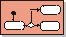
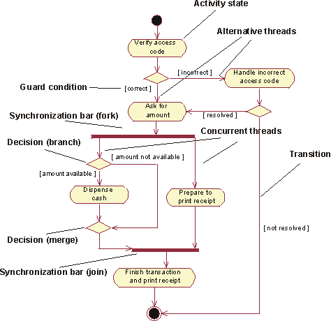

Artifacts >
Artifacts >
 Requirements Artifact Set >
Requirements Artifact Set >
 Use-Case Model... >
Use Case >
Use-Case Model... >
Use Case >
 Guidelines >
Activity Diagram in the Use-Case Model
Guidelines >
Activity Diagram in the Use-Case Model
Artifacts >
Requirements Artifact Set >
Use-Case Model... >
Use Case >
Guidelines >
Activity Diagram in the Use-Case Model
Guidelines:
|
 Activity Diagram |
An activity diagram in the use-case model illustrates the flow of events of a use case. |
The flow of events of a use case describes what needs to be done by the system to provide value to an actor. It consists of a sequence of activities that together produce something for the actor. The flow of events consists of a basic flow, and one or several alternative flows.
The flow of events of a use case can be described graphically with the help of an activity diagram. Such a diagram shows:

A simplified activity diagram for the use case Withdraw Money in the use-case model of an automated teller machine (ATM).
Activity diagram is a special case of a statechart diagram in which all or
most of the states are activity states and in which all or most of the of the
transitions are triggered by completion of actions in the source states. For
more details on activity diagrams, see Guidelines:
Activity Diagram in the Business Use-Case Model.
|
Rational Unified
Process
|